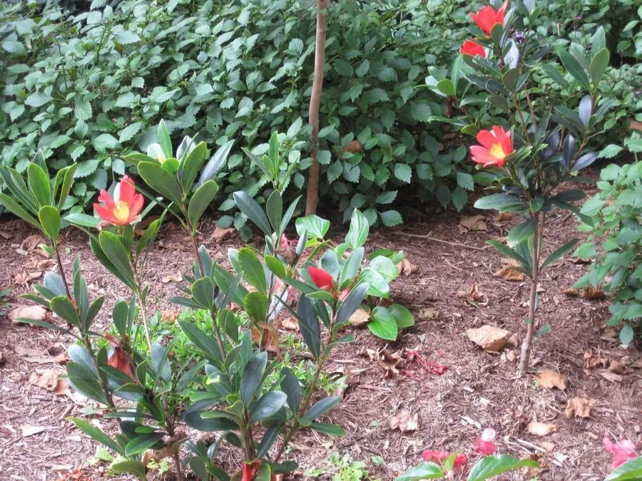

灌木与花木 · 植物界
杜鹃红山茶 Camellia azalea

山茶科山茶属常绿灌木，花鲜红色、形似杜鹃，夏季至秋季持续开花，是珍稀的四季开花山茶，国家一级保护植物。
- 分类
- 门被子植物门纲木兰纲目杜鹃花目科山茶科属山茶属
- 栖息环境
- 海拔 200–300 米的溪谷林下，喜温暖湿润半阴、酸性土
- 地理分布
- 中国广东阳春局部山地，分布区极狭窄
- 保护级别
- 国家一级重点保护野生植物；IUCN 暂无评估，野生植株极少
物种志
杜鹃红山茶为山茶科山茶属常绿灌木，高约一至二米，树皮灰褐色，嫩枝紫红色。叶片互生，革质，倒卵形至长圆形，边缘中部以上具细锯齿，表面深绿有光泽。花单生或两朵并生于枝顶，花冠鲜红色，花瓣五至七枚，形似杜鹃花，花期五月至翌年二月，可四季零星开放；蒴果球形，成熟时褐色开裂，果期秋季。
杜鹃红山茶仅分布于中国广东阳春一带的局部山地，生于海拔两百至三百米的溪谷林下，野生植株数量极少，被列为国家一级重点保护野生植物。它喜温暖湿润和半阴环境，要求酸性、疏松透气的土壤，不耐寒也不耐酷暑。花鲜红、花期长，是山茶育种中珍贵的基因资源，已培育出多个四季开花的园艺品种；目前野生种群通过就地保护和人工繁育逐步恢复。
形态与习性
- 株高1–2 m，嫩枝紫红色
- 花期5 月至翌年 2 月，可四季开花
- 果期秋季，蒴果球形
- 光照喜半阴，忌强光暴晒
- 水分喜湿润，忌积水
- 土壤酸性疏松的红壤
- 主要用途珍稀育种材料，盆栽观赏
趣味知识
- 杜鹃红山茶的花形似杜鹃、叶似山茶，因此得名，是山茶属中的奇特种类。
- 它能在夏季持续开花，打破了山茶多冬季开花的常规，是珍贵的育种资源。
- 野生杜鹃红山茶一度仅存千余株，被列为国家一级重点保护植物。